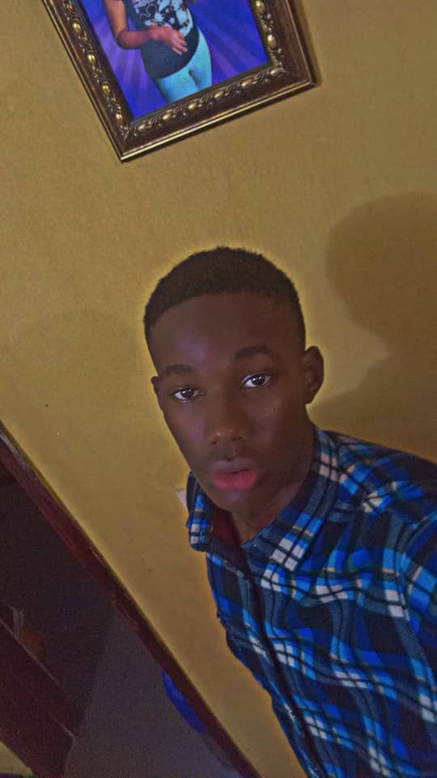

Hinckley Ohaegbulem | WDD 130
Hello! My name is Hinckley Ohaegbulem and I am from lagos, Nigeria. I enjoy playing basketball and also watching anime. i am currently studying software development at BYU idaho. I am excited to learn software development. My dream is to create a software to help the world be more connected together.